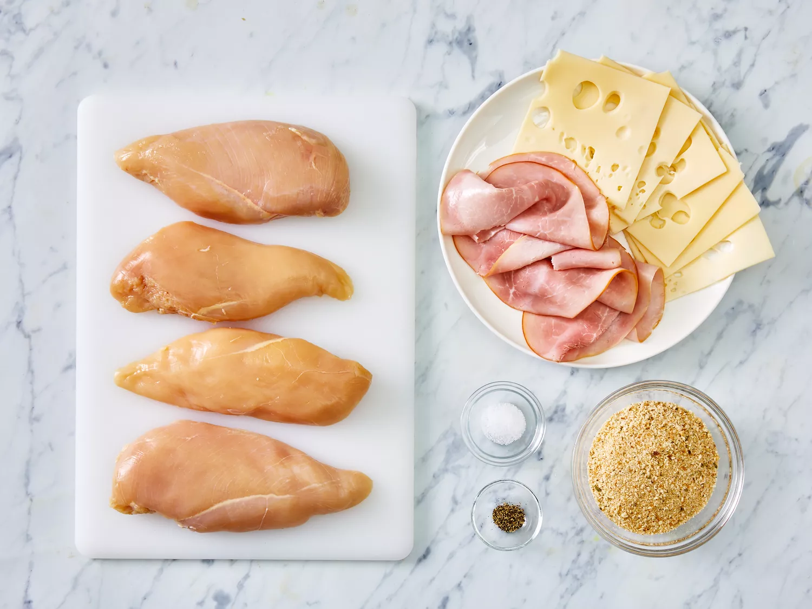
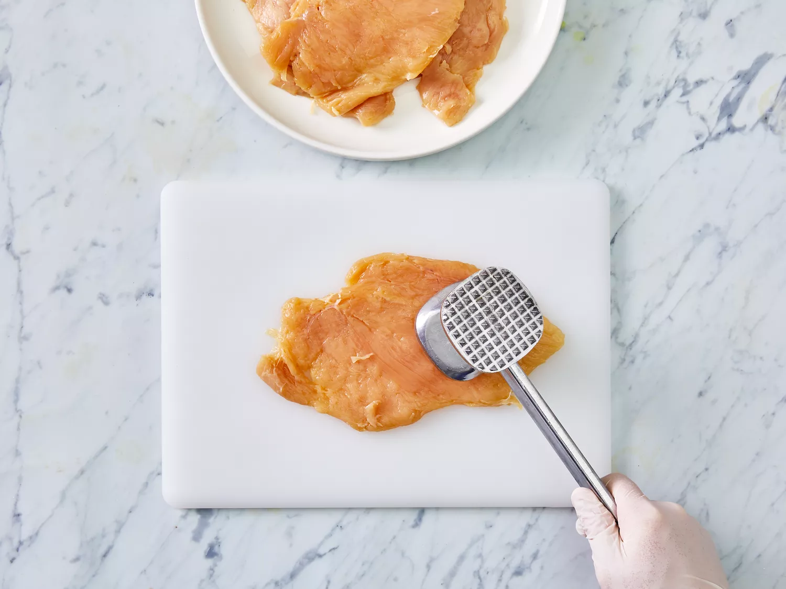
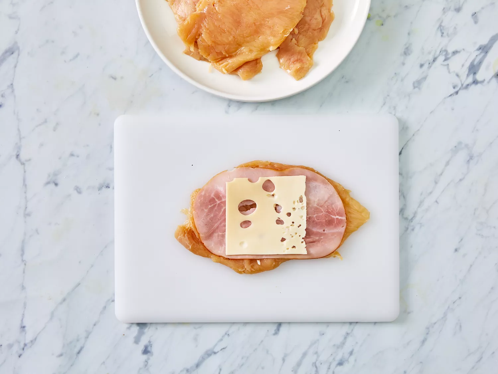
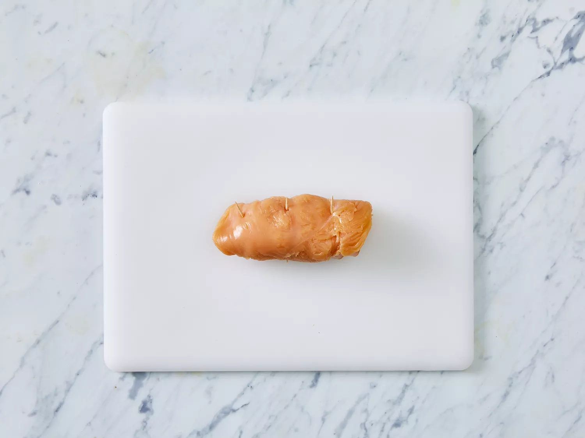
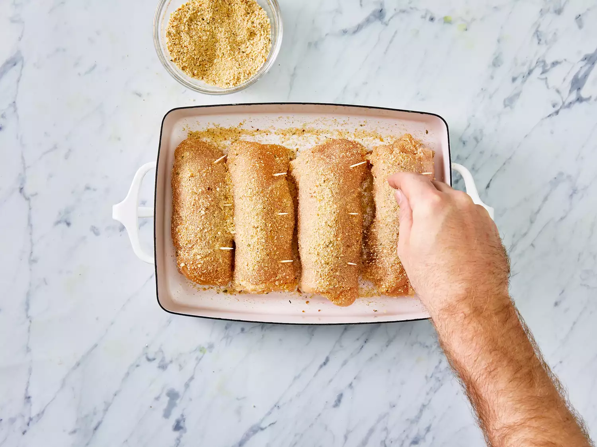
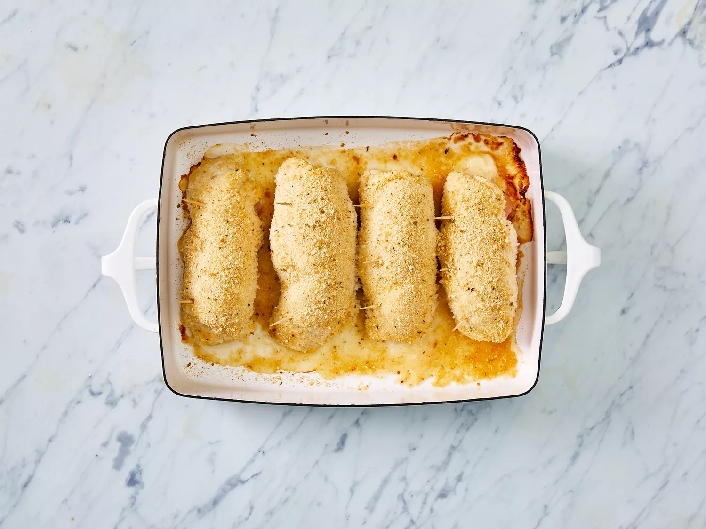
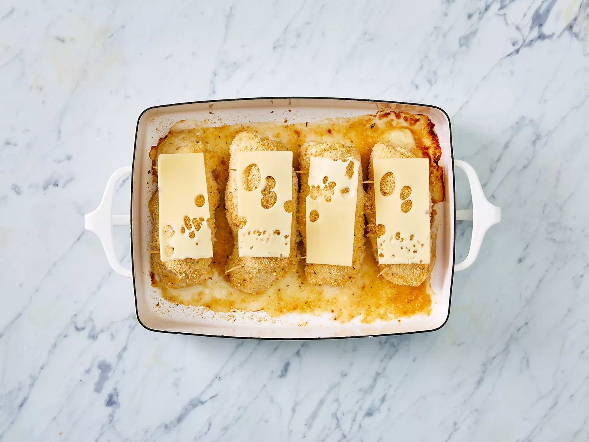
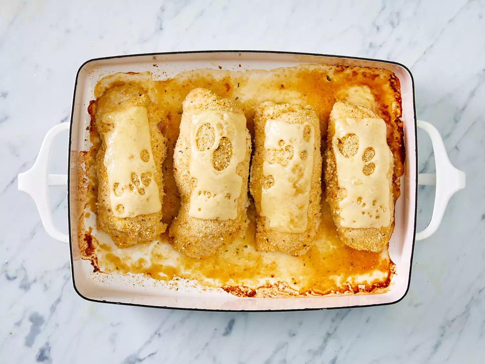

Don't feel like going out tonight? You can easily make a gourmet restaurant-worthy meal in the comfort of your own kitchen with this top-rated chicken cordon bleu recipe. It's impressive, delicious, and way simpler than you think.This entree is easy and delicious!
A cordon bleu is a dish that traditionally consists of meat wrapped around cheese, then breaded and pan-fried or deep-fried. Many modern versions of the classic French recipe, such as this one, are baked.
Classic chicken cordon bleu is made with the following ingredients: chicken cutlets, cooked ham, Swiss cheese, bread crumbs, and simple spices. It's usually topped with a rich cream sauce spiked with a hint of Dijon mustard.
"Cordon bleu" translates to "blue ribbon." According to Larousse Gastronomique, a French food encyclopedia, the phrase dates back to medieval times when the most prestigious order a knight could earn was called the Cross of the Holy Spirit. The honor was signified by a medal that hung from a blue ribbon known as Le Cordon Bleu. Over time, the blue ribbon became a symbol of excellence. The term, meanwhile, became associated with food that meets the highest of standards or that is prepared by the most prestigious chefs.
There are many ways to make chicken cordon bleu, from the traditional French method to the simple oven-baked one detailed here. You'll find the full recipe below, but here's a brief overview of what you can expect:
Cover the chicken cutlets with plastic wrap and pound them with a mallet to create thin, even pieces. Thoroughly season the chicken with salt and pepper.
Top each piece of chicken with one slice of Swiss cheese and one slice of ham. Roll the chicken vertically so that the ham and cheese are contained. Secure each roll with a toothpick.
Arrange the chicken rolls in a prepared baking dish. Sprinkle liberally and evenly with breadcrumbs. Bake until the chicken is no longer pink, top each roll with half a slice of Swiss, and continue baking until the cheese is melted.
This recipe should be fully cooked after 30-35 minutes in an oven preheated to 350 degrees F. However, every oven is different — the chicken should no longer be pink and an instant-read thermometer inserted into the center should read at least 165 degrees F (74 degrees C).
Store your chicken cordon bleu leftovers in an airtight container in the fridge for three to four days. Reheat in the oven instead of the microwave to avoid sogginess. About 10 minutes at 350 degrees F should do the trick.
To freeze chicken cordon bleu, simply arrange the completely-cooled rolls on a lined baking sheet, cover, and freeze for about two hours. Transfer the now-frozen rolls to an airtight freezer bag labeled with the date. Freeze for up to four months.
To thaw frozen chicken cordon bleu, transfer the container to the fridge the night before you plan to serve it. Bake the thawed rolls for about 10 minutes at 350 degrees F.
"What a wonderful recipe," raves Pj kearns. "Simple and delicious! I did use a little olive oil to roll the chicken in after it was constructed and then lightly breaded them. Works out perfectly!"
Step 1
Gather all ingredients. Preheat oven to 350 degrees F (175 degrees C). Coat a 7x11-inch baking dish with nonstick cooking spray.
Step 2
Pound chicken breasts to 1/4 inch thickness.
Step 3
Sprinkle each piece of chicken on both sides with salt and pepper. Place 1 Swiss cheese slice and 1 ham slice on top of each breast.
Step 4
Roll up each breast and secure with toothpicks.
Step 5
Place in the prepared baking dish and sprinkle chicken evenly with bread crumbs.
Step 6
Bake in the preheated oven until chicken is no longer pink, 30 to 35 minutes.
Step 7
Remove from the oven, and place 1/2 Swiss cheese slice on top of each breast.
Step 8
Return to the oven until cheese has melted, 3 to 5 minutes. Remove toothpicks and serve immediately.
